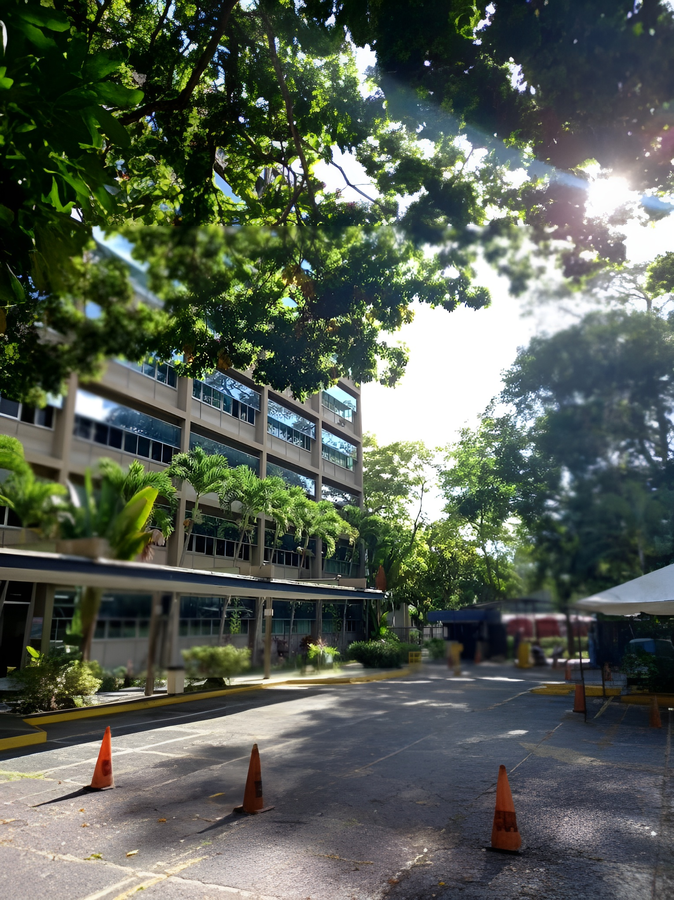

Un poco de historia...
La Universidad Nacional Experimental de la Gran Caracas (UNEXCA) es una universidad pública de Venezuela, co-tutelada por el Ministerio del Poder Popular para la Educación Universitaria, cuya sede principal se encuentra ubicada en Caracas. Fue fundada el 27 de febrero de 2018 , está universidad surge de la transformación conjunta del Colegio Universitario “Francisco de Miranda”, Colegio Universitario “Profesor José Lorenzo Pérez Rodríguez” y del Colegio Universitario de Caracas. mediante la Gaceta Oficial Extraordinaria N° 41.349, publicado en ”decreto Presidencial N° 3.293 en convenio con la Misión Alma Mater.
Sede Altagracia

Sede Floresta
Sede La Urbina
Programas Academicos
PNF INFORMATICA
Conceptualiza y construye productos tecnologicos informaticos. Desarrolla e implementa software priorizando el uso de plataformas libres.
PNF CONTADURIA
Conceptualiza y construye productos tecnologicos informaticos. Desarrolla e implementa software priorizando el uso de plataformas libres.
PNF ADMINISTRACION
Conceptualiza y construye productos tecnologicos informaticos. Desarrolla e implementa software priorizando el uso de plataformas libres.